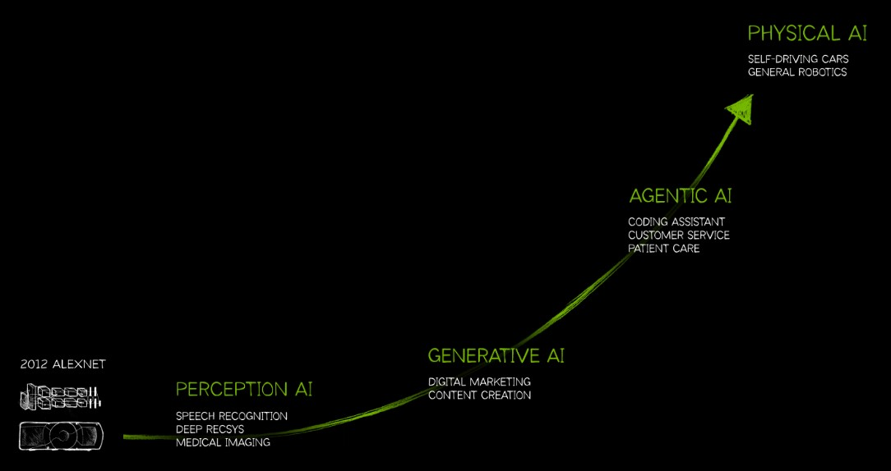

January 14th, 2025
The next step in artificial intelligence (AI) will be achieved in 2025. Starting with the AlexNet in 2012, which was the first big leap in AI technology, a new roadmap for AI emerged. After AlexNet the next step was perception AI (speech recognition, deep recommender systems and medical imaging). The current AI landscape is shaped by generative AI (digital marketing and content creation). The next step, starting in 2025, is agentic AI (coding assistance, customer service, patient care).[1]
Unlike typical AI systems, agentic AI performs tasks independently, making decisions and carrying out activities without ongoing supervision and user inputs. This progress has the potential to revolutionise businesses, workplaces, and everyday life, but it also poses serious concerns about ethics, safety, and human oversight.[2]
Agentic AI is capable of independent action, it can analyse data, make decisions and execute tasks across many topics. These AI systems can help in daily life or the workplace. For example, it can troubleshoot IT issues, optimise workflows, manage supply chains, act as personal assistants, summarise news or manage household devices.
Agentic AI can operate without human input. This autonomy is enabled by advances in machine learning models, multimodal capabilities (text, pictures, and audio processing), and improved reasoning ability.[3] [4] [5]
While agentic AI offers huge potential, it also poses problems. Autonomous decision-making can lead to unintended behaviour if not well controlled. For example:
Governments and organisations are starting to address these concerns. Regulatory frameworks are being developed to ensure responsible use of agentic AI while fostering innovation.[8]
Agentic AI is a big advancement in AI. Automating complicated operations and improving decision-making processes can change industries and improve the daily life. However, its success will be contingent on overcoming ethical concerns and retaining strong human oversight.
To maximise the benefits and minimise the drawbacks of agentic AI, it is important to coordinate this future with politicians, researchers and industry leaders.